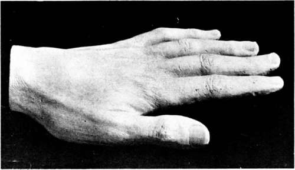

"Poems". Part 3
Description
This section is from the book "The Life Of Francis Thompson", by Everard Meynell. Also available from Amazon: The life of Francis Thompson.
"Poems". Part 3
His reserve in public did not mean that he was so little contentious that he never smote his foes in private. He was full of unspoken arguments, like the man you see talking to himself, or smiling as he walks, and of whom you may be sure that he is confounding or dismissing an opponent. The solitary man is full of good answers, but they belong to an interview from which, over soon, he is speeding; for his triumph, generally, is the sad one of putting together a repartee or clinching an argument-too late. So it was with Thompson. He thought out his brisk repartees purely for his own satisfaction and at leisure, and would have blushed to answer his belittlers in the open. But in the mental " ring," in the note-book, he occasionally triumphed :-
" I need hardly say I have not escaped the accusation of belonging to a ' Mutual Admiration Society.' There are few writers, I fancy, but have at one time or another been surprised by the experience. For it is often an odd surprise. I myself, for example, am a recluse ; with one or two intimate friends whom I see and one or two whom I don't. If in the latter case you deny the intimacy you fail to grasp that I am a recluse. I saw them ten years ago-there's intimacy. I might see them again next week, or year-why then, there's more intimacy. And I don't need to see them at all-go to, would you desire better intimacy ? The chapter of my intimate friends is as of the snakes in Ireland. My intimate friends I do, past question, encounter of odd times-if that constitute the acquaintance, it is the limit of mine. But speculative assumption, as it is without knowledge, so cannot have knowledge of its own incongruity.
" Nor is the reciprocal admiration of small men necessarily foolish : it is foolish only when it admires what each wishes to be, not what he is. For my part I have known in true literary men generosity united with unflinching plainness of speech. They love literature too much, that they should bring into her presence less than severe truth, within the scope and compass of their conception."
If Thompson had been scolded for his Catholic friends, his Catholic friends were to be scolded for their Thompson, but on a different score. In the American Ecclesiastical Review, for June 1898, Canon Sheehan, author of The Triumph of Failure, wrote :-
" For the present he will write no more poetry. Why ? I should hardly like to intrude upon the privacy of another's thoughts ; but Francis Thompson, who, with all his incongruities, ranks in English poetry with Shelley, and only beneath Shakespeare, has hardly had any recognition in Catholic circles. If Francis Thompson had been an Anglican or a Unitarian, his praises would have been sung unto the ends of the earth. He would have been the creator of a new school of poetry. Disciples would have knelt at his feet. But, being only a Catholic, he is allowed to retire, and bury in silence one of the noblest imaginations that have ever been given to Nature's select ones-her poets. Only two Catholics-literary Catholics-have noticed this surprising genius-Coventry Patmore and Wilfrid Meynell. The vast bulk of our co-religionists have not even heard his name, although it is already bruited amongst the Immortals; and the great Catholic poet, for whose advent we have been straining our vision, has passed beneath our eyes, sung his immortal songs, and vanished."
Another view of the poet's attitude towards his reception comes from Mrs. Blackburn at Pantasaph, 1894:-
" As for Francis, I hardly know what to say. I wish he would show some kind of human elation at his unprecedented success, but he seems to take it all in a dull, mechanical way, which is distressing. It is two months now since there has been any change in him. He stays away for days together, and, although he has promised to come to tea with me this afternoon, ten to one I shan't see him. Bishop Carroll was here last week, and saw Francis a good deal at the Monastery. He told me he would ask him to come and stay a short time with him at Stalybridge, and take him to see his father. Francis seems so much to want to see his own people again. It is odd to read all the well-merited praise, and then realise how outside the pale of humanity this great genius is, more irresponsible than any child, with a child's fits of temper and want of foresight and control. He isn't doing a stroke of work, and stays in bed the best part of the day, and lately he falls asleep when he comes to see me. No one can do anything with him."
It was this man who, nevertheless, was as near his public as it is possible for a writer to be; he made his public. Nobody thought Mr. H. D. Traill misjudged the chances of popularity when, on the publication of Poems, he wrote to W. M.:-
" I quite agree with you in thinking him a remarkable poet, but, if he is ever to become other than a ' poet's poet' or ' critic's poet'-if indeed it is worth anyone's ambition to be other than that-it will only be by working in a different manner. A ' public' to appreciate ' The Hound of Heaven' is to me inconceivable."
Mr. William Archer, a splendid appreciator, expressed much the same view. Yet in the three years after Thompson's death the separate edition of "The Hound of Heaven " sold fifty thousand copies ; and, apart from anthologies, many more thousands were sold of the books containing it.
"Sister Songs"
The Athenceum notice fell to Mr. Arthur Symons (3 Feb. 1894), moved to note the worst, that "inchoate poem, ' A Judgment in Heaven,' " and to remark the closeness of imitation of Mr. Patmore and Crashaw-" Can a man serve two such masters ? "-and other influences sharing "the somewhat external quality of Mr. Thompson's inspiration." Mr. Symons was equally careful to establish, coldly enough, his appreciation of such importance as might be safely allowed the new poet. No doubt that review, though W. M. labelled it favourable, made the generosity of Mr. Le Gallienne and the splendid appreciation of Mr. Garvin doubly valuable to send to Pantasaph.
Cast of Francis Thompson's Hand.
Continue to:
- prev: "Poems". Part 2
- Table of Contents
- next: "Poems". Part 4